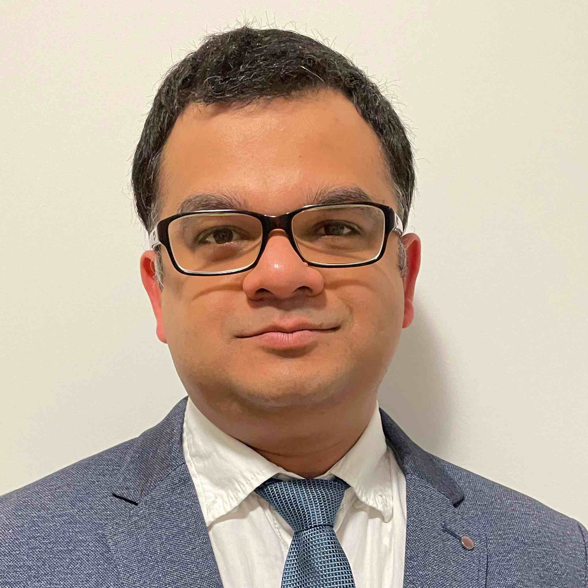

Siddhesh Sule
Technical Manager @ Merit Automotive | PRINCE2 Agile® Foundation Certified | Python | Matlab-Simulink | Systems Engineering
B.E, Mechanical SW, University of Pune, India
I am a Technical Manager with over 13 years of experience in Automotive Industry. I live in Germany with my family. My main responsibilities in my current job are to build strong technical relations with German OEMs for Automotive Mechatronics products. I love to spend my free time with my family or doing coding and building websites.
Educational Background
University of Michigan, USA
2004-2008
Successfully completed a specialization course in Python for Everybody provided by the University of Michigan, USA, and offered by Coursera. The specialization consisted of five extensive courses on Python programming skills and capstones.
- Programming for Everybody
- Python Data structures
- Using Python to Access Web Data
- Using Databases with Python
- Capstone: Retrieving, Processing and Visualizing Data with Python
UNSW Canberra, Australia
2020-2020
Completed an online certificate course on Introduction to Systems Engineering conducted by UNSW (University of New South Wales, Australia) and offered by Coursera. The 9 weeks course was packed with some very insightful lectures along with some exciting quizzes and thought-provoking graded assignments.
Savitribai Phule Pune University, India
2004-2008
>>Description<<
Hobbys
- Programming
- Web Development